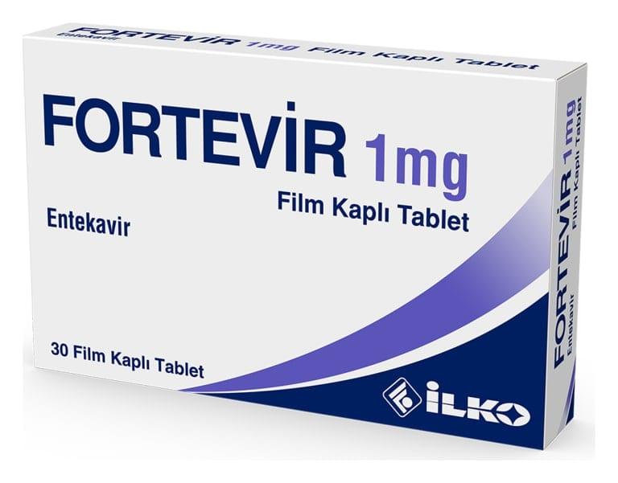

Fortevir 1 mg Film Kaplı Tablet, 30 Adet

Ne için kullanılır
KT · Bölüm 1FORTEVİR antiviraller olarak adlandırılan bir ilaç grubuna dahildir. FORTEVİR, erişkinlerde kronik (uzun süreli) hepatit B virüsü (HBV) enfeksiyonunun tedavisinde kullanılır. FORTEVİR karaciğeri hasar görmüş fakat halen düzgün şekilde işlev gösteren (kompanse karaciğer hastalığı) kişilerde ve karaciğeri hasar görmüş ve düzgün şekilde işlev göstermeyen (dekompanse karaciğer hastalığı) kişilerde kullanılabilir. FORTEVİR ayrıca vücut ağırlığı en az 32,6 kg olan çocuklar ve ergenlerde kronik (uzun süreli) HBV enfeksiyonunu tedavi etmek için kullanılır. FORTEVİR, karaciğeri hasar görmüş ancak hala düzgün çalışan (kompanse karaciğer hastalığı) çocuklarda kullanılabilir.
FORTEVİR 1 mg film kaplı tabletlerin her biri etken madde olarak 1 mg entekavire eşdeğer 1,065 mg entekavir monohidrat içerir. FORTEVİR 1 mg film kaplı tablet, açık pembe renkli, üçgen şekline sahip, bombeli, çentiksiz film kaplı tabletler halindedir. Her kutuda 30 tablet vardır.
FORTEVİR, erişkinlerde hepatit B virüsü (HBV) enfeksiyonunun tedavisinde kullanılır.
Hepatit B virüsünün neden olduğu enfeksiyon, karaciğerinize zarar verebilir. FORTEVİR vücudunuzdaki virüs miktarını azaltır ve karaciğerinizin durumunu iyileştirir.